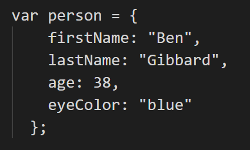
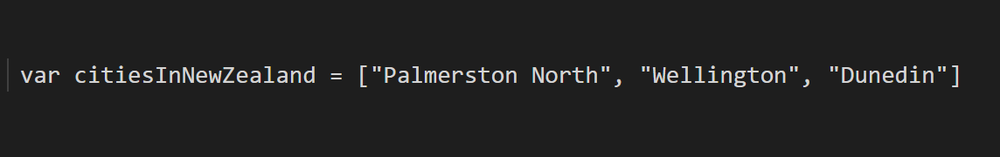

Think of HTML like a plain bowl of porridge - nutritious but boring. CSS are the toppings; brown sugar, banana, golden syrup. Anything you like to add flavour. Combined, the porridge and toppings make a delicious breakfast.
Control flow is the order in which statements in code are executed. If it reaches a loop it will go back to a specified point and run the rest of the code again.
Here’s a real world example of control flow and loops: steps you might follow when washing your car.
DOM is an acronym for Document object model.
Document: your web page/HTML file.
Object: refers to HTML elements e.g. head, h1, img.
Model: the structure of the HTML file. Each of these elements and sub elements in the structure are also referred to as Nodes.
It is an API (Application Programming Interface) for HTML, CSS and JS. It is a tree-like structure representation of your web page code. It is a middleman between you and your web page that lets you talk to your web page through commands and queries and responds with results.
The DOM is accessed through your web broswer by right clicking anywhere on the page and selecting 'Inspect'. The keyboard shortcut for this in Chrome using Windows is CTRL+Shift+I.
You can use the DOM as a testing space essentially by changing element content or changing the colour of a background for example. Rather than altering this data in your HTML or CSS files, you can make these changes directly through the DOM and play around with what looks or works better. Just make sure to save the code of the changes back to the files to make the changes permanent.
Arrays and objects are both used to store information but the way to access data from them is quite different.
Objects
You would use an object to store information for a certain ‘thing’, like attributes of a person, the code consists of keys (firstName) and values ("Ben"). The data is called upon by separating the action and the key with a dot operator ‘.’
Arrays
An array would be used for something like a list of items associated with one thing, like a list of cities of a country. The contents of an array are assigned numbers, starting from zero. To access this data you call upon the number in order of which they appear in the array.
Functions run a set of specified commands that return a result. A function could be something like a simple mathematical equation or extracting data from an array.
Functions allow you to create easily reusable code that can be called upon anywhere else in your work. This saves time and creates convenience.